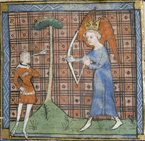
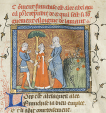
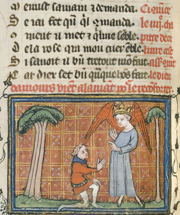

Le Roman de la Rose (The Romance of the Rose)
University of Chicago Library MS 1380
View the digital manuscript
Le Roman de la Rose, begun by Guillaume de Lorris ca. 1230 and completed, in a different style, ca. 1270-80, by Jean de Meun, builds on the concept of courtly love found in the poetry of the troubadours. The authors create a complex allegory of the romance between the Lover and the Rose. In the quest to pick the Rose (to achieve the conquest of love), the flower and its attendants represent the Lady and her sentiments while being wooed.
In the first part of the poem, written by de Lorris, the Lover recounts his dream, ending with the winning of a kiss from the Lady. In the dream, the Lover discovers a walled garden and gains entrance thanks to a beautiful young woman. He meets Diversion and dancers who represent courtly values such as Beauty and Generosity. A tour of the garden brings him to a beautiful bed of roses by the Fountain of Love. Pierced by the arrows of the god of love, he sets out to pluck the rosebud that has overwhelmed his senses. Love explains to the Lover how he ought to conduct himself, and the conflicting emotions he will feel. With help from Warm Welcome, the Lover makes his way through the thicket of thorns and confronts Danger and his allies, Slander, Fear and others. Aided by Friend, Honesty, Pity and Venus, he succeeds in overcoming Chastity and obtaining his desire.
His bliss is short-lived, as the forces of resistance oppose him in the second part of the poem, written by de Meun. The Lover sets out on a renewed quest to conquer the heart of his love, whom Jealousy has imprisoned along with Warm Welcome. The long and arduous battle is interspersed with didactic lectures by such figures as Reason. False Appearance and Forced Abstinence trick and strangle Slander, thus entering the wall and freeing Courtesy and Generosity. The four confront the old woman guarding Warm Welcome, who advises on table manners and dress for young women and recommends that they not be faithful to only one man, as men are by nature untrustworthy. The Lover gains admittance to see Warm Welcome, but is confronted with Danger, Shame and Fear who imprison Welcome ever more securely. Before those forces can conquer the Lover, he calls his army to assail the castle with the help of Venus (carnal love). Venus sets the castle on fire, causing Danger, Jealousy and her companions to flee. The battle over, the Lover is able to complete his pilgrimage and at last pluck the rosebud.
The Roman served as an influential compendium of advice for readers of its time and was the cause of the first literary "war," which revolved partly around arguments on the role and dignity of women.